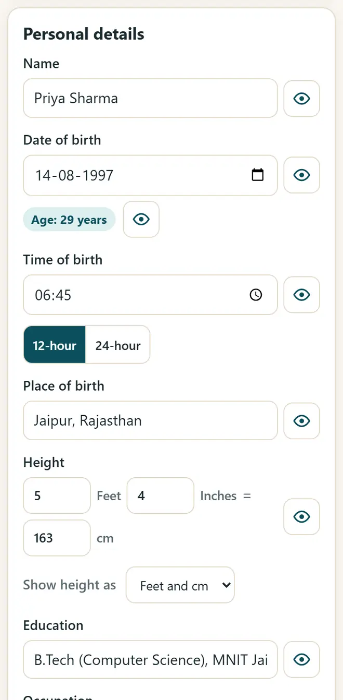
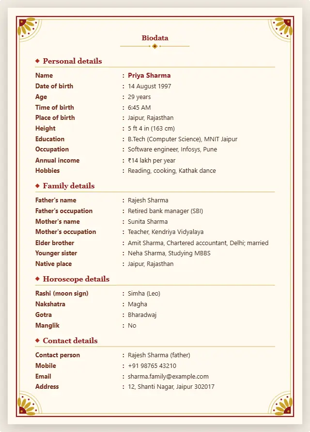

Marriage biodata format: what to write and how to make it for free
A good biodata fits on one page, is easy to read and shares only what the family wants to share. Here is the usual order of details and a free maker that works in Hindi, Marathi, English and 9 more languages.
Short answer
A marriage biodata usually has personal details (name, date and place of birth, height, education, job), family details (parents, brothers and sisters, native place), optional horoscope details (rashi, nakshatra, gotra) and contact details. Fill them in Marriage Biodata Maker, choose a design and save it as a PDF or a WhatsApp image.
Make a biodata in 5 steps
-
Open the maker and look at the example
Open Marriage Biodata Maker. An example biodata is shown first. Press “Start blank” to start with your own details.
-
Fill in the details
Type the personal, family and contact details. The age is worked out from the date of birth, empty lines are left out, and the eye button hides a line without deleting it.

Fill in the details: the biodata updates as you type. -
Add a photo and horoscope (optional)
Add a photo and crop it. Turn on the horoscope section only if your family uses one.
-
Choose the design and the language
Pick one of 8 designs, such as Traditional, Floral, Royal or Marigold, and the symbol at the top. The labels can be in Hindi, Marathi or any of 12 languages, with English below them if you like.

A finished one-page biodata, ready to print or send. -
Save it as a PDF or a WhatsApp image
Press “Print / Save PDF” and choose Save as PDF for a one-page A4 PDF, or press “WhatsApp image (PNG)” to send it straight on WhatsApp.
The usual order in a marriage biodata
- Personal: full name, date, time and place of birth, height, education, job and income.
- Family: father's and mother's names and work, brothers and sisters, native place and family type.
- Horoscope (optional): rashi, nakshatra, gotra and manglik status.
- Contact: the person to contact, a phone number and an email. Send the full biodata only to families you trust.
Get new free tools and Hindi AI lessons
Join our email list to hear about new free apps, new guides and Hindi video lessons on AI. No spam.
For adults (18+). You can unsubscribe at any time.
Why we recommend these tools
- Free for everyone: no ads, no sign-up and no paid plan.
- Private: your files and details stay on your own device.
- Works on a phone, laptop or smartboard, and offline once opened.
- Available in 12 languages, including Hindi.
Prefer video? Watch free Hindi lessons on AI and free tools on our YouTube channel.
Frequently asked questions
What should I write in a marriage biodata?
Personal details, education and job, family details, optional horoscope details and a contact number. Keep it to one page, and leave out anything your family does not want to share.
Can I make the biodata in Hindi or Marathi?
Yes. Choose the language of the labels: Hindi, Marathi, Gujarati, Bengali, Tamil, Telugu and more. What you type stays exactly as you typed it.
How do I send the biodata on WhatsApp?
Press “WhatsApp image (PNG)” to save a picture of the biodata, then send it from your gallery. A PDF works too.
Is my family's information safe?
Yes. The details and the photo are saved only in the browser on your device. Nothing is uploaded. Make a backup file to keep a copy.
Is a horoscope necessary in a biodata?
No. The horoscope section is optional. Leave it off if your family does not use one.
Found this useful?
Send it to a friend, your colleagues or your school's WhatsApp group.